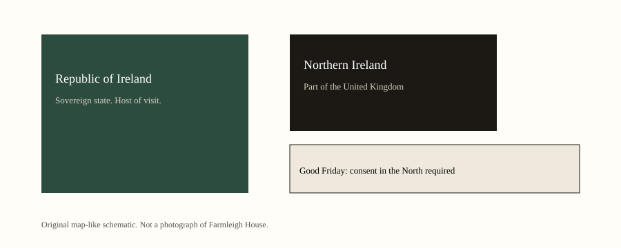
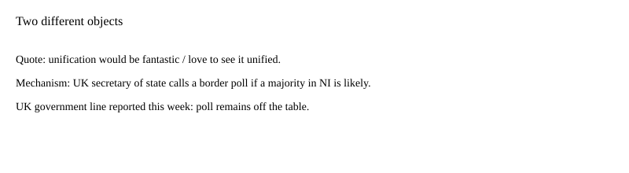

Ireland / United Kingdom · diplomacy · 13 September 2026
Trump called Irish unification “fantastic.” The Good Friday consent rule did not change.

What is agreed across desks
On Saturday in Dublin, after a meeting at Farmleigh House with Taoiseach Micheál Martin, President Trump answered a question about Irish unification. Reuters, the Guardian, and Al Jazeera quote the same spine: he did not want to cause problems, he would “love to see it unified,” and he thought it would be “fantastic” or “a great thing.” He said it would happen “eventually” and “may as well happen now,” and that “the UK will have something to say about it.”
On Sunday at the Irish Open on a course his company owns in Doonbeg, he restated the view. Reuters quoted: “You have Northern Ireland and you have Ireland and it would seem to me that one of the ‘naturals’ of all time is to put them together.” Asked about Scotland, he said he would not talk about that “yet.”
Martin did not adopt the line at the Saturday podium. A Downing Street spokesperson said Prime Minister Andy Burnham’s position was unchanged: he did not see majority support in Northern Ireland for a referendum. Burnham had told Parliament that a poll was “off the table” until that appearance of majority support changed.
What is only a quote
“It’s going to happen eventually” is a prediction. Demography, assembly arithmetic, and polling in the North are separate literatures. None of those series was released as a new official finding this weekend because a visitor spoke.
Calling unification a feather in everybody’s cap, as the Guardian recorded, is a value judgment. Unionist leaders in Belfast and ministers in London rejected the judgment. That rejection is also speech.
Mechanism a reader needs
The island has been partitioned since 1921. Northern Ireland is part of the United Kingdom. The Republic of Ireland is a separate state. The 1998 Good Friday Agreement ended most of the thirty-year conflict often called the Troubles, in which about 3,500 people were killed. The agreement’s constitutional piece is consent. The Secretary of State for Northern Ireland may call a border poll if it appears likely that a majority in Northern Ireland would vote to leave the United Kingdom and join the Republic. A majority in the Republic would also have to agree under the Irish constitution.
A U.S. president has no vote in that machinery. He can host, withhold, or grant political attention. Attention is not a writ.
Scotland is a different legal object. It voted against independence in 2014. The UK government has declined a second referendum. Mixing Scotland and Ireland in one question is how the Sunday exchange began. The answers were deliberately split.
Farmleigh House is an official Irish venue for visiting heads of government. Doonbeg is a private golf property. The Saturday remarks came in the official setting beside the taoiseach. The Sunday restatement came in the private setting beside a fairway. The constitutional machinery in Belfast does not change with the venue.
Unionist parties treat American language about unification as pressure. Nationalist parties treat it as recognition. Both reactions were reported as reactions. Neither reaction is a border poll. The Secretary of State’s test is about likely majority support in Northern Ireland, not about applause in Dublin or irritation in London.
What this story is not
It is not a scheduled referendum. It is not a change to the Good Friday Agreement. A separate Sunday remark about removing a 10 percent tariff on Irish whiskey is a different object and is not scored here. It is not a finding that unification would be good or bad for people who live in Belfast, Derry, or Cork.

Source articles and scores
| Outlet | Headline | T | N | C |
|---|---|---|---|---|
| Reuters | Trump reiterates support for united Ireland, says won't talk about Scotland 'yet' | 95 | 0 | 96 |
| The Guardian | Donald Trump says he would ‘love’ to see united Ireland | 91 | −12 | 90 |
| Al Jazeera | Trump says a unified Ireland would be ‘fantastic’ during Irish visit | 92 | −6 | 94 |
| Al Arabiya English | Trump says Irish unification would be ‘fantastic’ | 88 | 0 | 90 |
Images: original schematics. No Farmleigh news photograph copied.